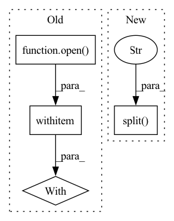

Pattern ID :1747
Before Change
def _generate_examples(self, source_file, target_file, target_file_2=None):
with open(source_file, encoding="utf-8") as f:
source_sentences = f.read().split("\n")
with open( target_file, encoding="utf-8") as f:
target_sentences = f.read().split("\n")
if self.config.name == "en-pt-es":
with open(target_file_2, encoding="utf-8") as f:
target_2_sentences = f.read().split("\n")
source, target, target_2 = tuple(self.config.name.split("-"))
for idx, (l1, l2, l3) in enumerate(zip(source_sentences, target_sentences, target_2_sentences)):After Change
elif path == target_file:
target_sentences = f.read().decode("utf-8").split("\n")
elif self.config.name == "en-pt-es" and path == target_file_2:
target_sentences_2 = f.read().decode("utf-8").split("\n" )
if self.config.name == "en-pt-es":
source, target, target_2 = tuple(self.config.name.split("-"))
for idx, (l1, l2, l3) in enumerate(zip(source_sentences, target_sentences, target_sentences_2)):In pattern: SUPERPATTERN
Frequency: 4
Non-data size: 4
Instances Fragment ID: 8163004
Project Name: huggingface/datasets
Commit Name: d8a998cf2deb18fe0b55361ec4218f91ffdb8be9
Time: 2021-11-16
Author: mario@huggingface.co
File Name: datasets/scielo/scielo.py
M Class Name: Scielo
N Class Name: Scielo
M Method Name: _generate_examples(5)
N Method Name: _generate_examples(4)
M Parent Class: datasets.GeneratorBasedBuilder
N Parent Class: datasets.GeneratorBasedBuilder
M File Name: datasets/scielo/scielo.py
N File Name: datasets/scielo/scielo.py
M Start Line: 104
M End Line: 113
N Start Line: 103
N End Line: 112
Before Change
def get_requirements(path):
ret = []
// path = "/home/ubuntu/OpenDelta_beta/OpenDelta/"
with open( os.path.join(path, "opendelta.egg-info/requires.txt"), encoding="utf-8") as freq:
for line in freq.readlines():
ret.append( line.strip() )
return ret
After Change
def get_requirements():
ret = [x for x in requires.split("\n" ) if len(x)>0]
print("requirements:", ret)
return ret
Fragment ID: 8163006
Project Name: thunlp/opendelta
Commit Name: b9a0f7cf8930889a964a1b6ab49320824dbe0c73
Time: 2022-07-06
Author: shengdinghu@gmail.com
File Name: setup.py
M Class Name: AnonimousClass
N Class Name: AnonimousClass
M Method Name: get_requirements(0)
N Method Name: get_requirements(1)
M Parent Class:
N Parent Class:
M File Name: setup.py
N File Name: setup.py
M Start Line: 6
M End Line: 12
N Start Line: 21
N End Line: 22
Before Change
data_fields.remove("audio")
path_idx = data_fields.index("path")
with open( filepath, encoding="utf-8") as f:
lines = f.readlines()
headline = lines[0]
column_names = headline.strip().split("\t")After Change
column_names == data_fields
), f"The file should have {data_fields} as column names, but has {column_names}"
for line in lines[1:]:
field_values = line.decode("utf-8").strip().split("\t" )
// set full path for mp3 audio file
audio_path = "/".join([path_to_clips, field_values[path_idx]])
all_field_values[audio_path] = field_values
elif path.startswith(path_to_clips): Fragment ID: 8162991
Project Name: huggingface/datasets
Commit Name: 0534a87f60fb9a589138f0773e057c2429f482b7
Time: 2021-11-19
Author: 42851186+lhoestq@users.noreply.github.com
File Name: datasets/common_voice/common_voice.py
M Class Name: CommonVoice
N Class Name: CommonVoice
M Method Name: _generate_examples(4)
N Method Name: _generate_examples(3)
M Parent Class: datasets.GeneratorBasedBuilder
N Parent Class: datasets.GeneratorBasedBuilder
M File Name: datasets/common_voice/common_voice.py
N File Name: datasets/common_voice/common_voice.py
M Start Line: 709
M End Line: 735
N Start Line: 707
N End Line: 748
Before Change
proj_path = join(cfg.dataset_path, test_scan_name, "proj")
proj_file = join(proj_path, str(frame) + "_proj.pkl")
if isfile(proj_file):
with open( proj_file, "rb") as f:
proj_inds = pickle.load(f)
probs = test_probs[j][proj_inds[0], :]
pred = np.argmax(probs, 1)
After Change
// name = inputs["attr"]["name"]
name = inputs["attr"]["name"]
// print(name)
name_seq, name_points = name.split("_" )
test_path = join(cfg.test_result_folder, "sequences")
make_dir(test_path)
save_path = join(test_path, name_seq, "predictions") Fragment ID: 8163030
Project Name: isl-org/open3d-ml
Commit Name: 1ada80a42a187a3eefcb45d2f70078570d50872d
Time: 2020-08-22
Author: yilingq@umd.edu
File Name: ml3d/datasets/semantickitti.py
M Class Name: SemanticKITTI
N Class Name: SemanticKITTI
M Method Name: save_test_result(3)
N Method Name: save_test_result(3)
M Parent Class:
N Parent Class:
M File Name: ml3d/datasets/semantickitti.py
N File Name: ml3d/datasets/semantickitti.py
M Start Line: 107
M End Line: 126
N Start Line: 108
N End Line: 129